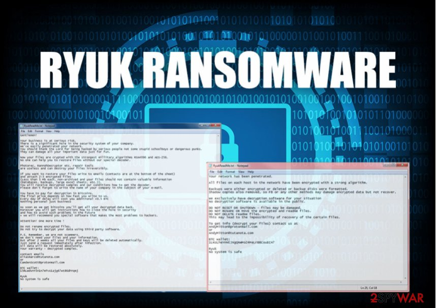

Ryuk, el ransomware que ha colapsado al SEPE
El martes, a las 10.26 horas, el Servicio Público de Empleo Estatal (SEPE), publicó un tuit desconcertante: «Por motivos ajenos, la web y la sede electrónica no se encuentran disponibles». Era una forma discreta de decir que acababan de ser atacados por un ransomware. Un virus que invade el ordenador, secuestra los archivos y exige un rescate a las víctimas. El ciberataque ha puesto patas arriba al organismo encargado de gestionar los ERTE. Hasta el punto de que sus funcionarios están atendiendo a los usuarios con cita previa a papel y boli. Por causas ajenas al @empleo_SEPE , la web y la sede electrónica del #SEPE no se encuentran disponibles. Se avisará cuando estén nuevamente operativas. Lamentamos las molestias causadas. pic.twitter.com/YPa9Dps2UX — SEPE (@empleo_SEPE) March 9, 2021 Todo apunta a que detrás del ataque al SEPE está Ryuk, un ramsomware de origen ruso. En este caso, se trataría de su última versión, lo que lo hace más indetectable ante los antivirus. El organismo público asegura, sin embargo, que el virus no ha robado datos ni dañado a sus servidores y tampoco afectará a las prestaciones de los ERTE.
Ryuk en profundidad
Ryuk es un tipo de ransomware conocido por realizar ciberataques a grandes entidades públicas. Por lo general, encripta los datos en un sistema infectado, haciendo inaccesible los datos del mismo hasta que se consigue un rescate pagado en Bitcoin.1 Se cree que Ryuk es utilizado por dos o más grupos criminales, probablemente rusos, cuyos objetivos son las organizaciones gubernamentales, en lugar de atacar a los individuos o consumidores
Origen
El ransomware apareció por primera vez en 2018.1 Aunque hubo sospechas iniciales de que era de origen norcoreano, más adelante las dudas recayeron en un origen ruso, ligado a dos o más cárteles del crimen de Europa del Este.12 A diferencia de otros piratas informáticos malintencionados, los controladores de Ryuk buscan principalmente extorsionar el pago de rescates para liberar los datos que su malware ha inutilizado mediante el cifrado. En una entrevista al Baltimore Sun, en referencia a su modus operandi, un analista de ciberseguridad estadounidense expresó, después de un ataque al sistema escolar del condado de Baltimore (Maryland) en noviembre de 2020, que usan Ryuk porque "todo es un negocio [para ellos], sólo les gusta hacer el trabajo", en referencia a las acciones para extorsionar un gran pago de rescate.
El Centro Nacional de Seguridad Cibernética británico señaló que Ryuk usa el malware informático Trickbot para instalarse, una vez que obtiene los accesos para entrar a los servidores de una red. Tiene la capacidad de derrotar muchas contramedidas anti-malware que pueden estar presentes y pueden deshabilitar por completo una red de computadoras. Entre sus funciones, es capaz de buscar y deshabilitar archivos de respaldo si se mantienen en servidores compartidos.4 Otro malware troyano usado por los piratas informáticos tras Ryuk es Emotet.56 La Agencia de Seguridad de Infraestructura y Ciberseguridad estadounidense (CISA) ha proporcionado información en red sobre cómo Ryuk infecta y toma el control de una red informática, expresando que el acceso se puede obtener inicialmente mediante "campañas de phishing que contienen enlaces a sitios web maliciosos que alojan el malware o los archivos adjuntos con el malware. Los cargadores inician la cadena de infección distribuyendo la carga útil; despliegan y ejecutan la puerta trasera desde el servidor de comando y control y la instalan en la máquina de la víctima".7 Los esfuerzos de phishing generalmente contienen documentos maliciosos (o hipervínculos a ellos).8 Cuando la víctima lo habilita, un cargador o macro malicioso inicia la secuencia de infección.7 Una vez que Ryuk toma el control de un sistema, cifra los datos almacenados, lo que hace imposible que los usuarios accedan a los mismos, a menos que éste realice un pago o rescate mediante el uso de Bitcoin a una cuenta desconocida e ilocalizable. En muchos casos, pueden pasar días o semanas entre el momento en que los piratas informáticos obtienen acceso inicialmente a un sistema antes de que se produzca el cifrado masivo, ya que los delincuentes penetran más profundamente en la red para infligir el máximo daño.9 Ryuk es un malware especialmente pernicioso porque también encuentra y cifra las unidades y los recursos de la red. También deshabilita la función de "restaurar sistema" de Microsoft Windows que, de lo contrario, permitiría restaurar los archivos del sistema, las aplicaciones y el registro del ordenador a su estado anterior sin cifrar.
Fuente: Wikipedia Fuente: El independiente